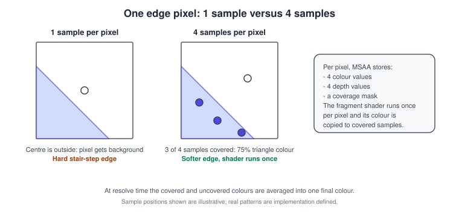
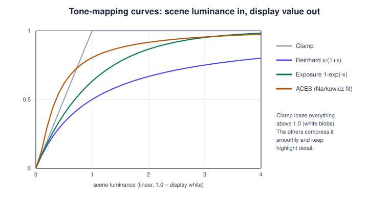
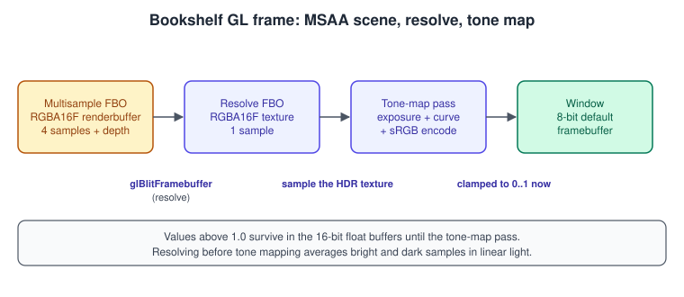
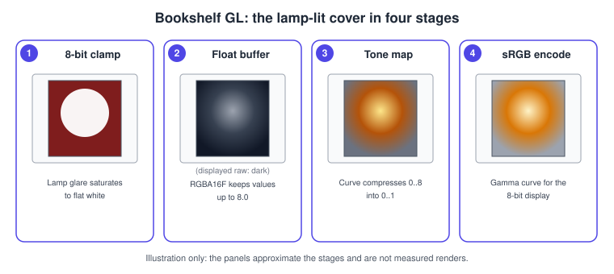

Antialiasing and HDR in OpenGL
|
This content was generated with the assistance of AI and should be verified against the official documentation before being relied on in production. |
Two different problems share this page because they share the same machinery, an off-screen framebuffer that is resolved and post-processed before it reaches the window. Aliasing is the stair-step look of edges drawn with one colour sample per pixel. High dynamic range is the fact that a lit scene contains brightness far above what a display can show, and an 8-bit buffer that clamps at 1.0 throws it away. OpenGL answers the first with multisample antialiasing (MSAA) and the second with floating-point render targets, tone mapping and correct gamma handling.
The facts on this page were checked in November 2026. They apply to OpenGL 4.6 with GLSL 4.60 and OpenGL ES 3.2 with GLSL ES 3.20; the version in which each feature became core is stated with it. The complete example needs only an OpenGL 3.3 core context, so it runs on macOS (OpenGL 4.1 maximum), desktop Linux and Windows. The ES differences are listed where they matter. The theory of colour handling is in Color Spaces, HDR and Tone Mapping, and the post-processing chain is in Transparency, Blending and Post-Processing. The framebuffer objects used below are explained in Framebuffers and Render to Texture.
Aliasing and multisampling
A triangle edge crosses a pixel at an arbitrary angle, but the rasteriser decides one colour for the whole pixel by testing whether a single point (the pixel centre) is inside the triangle. The decision is binary, so edges become staircases and thin objects shimmer when they move. MSAA keeps the cost of shading low while testing coverage and depth at several positions per pixel.

How MSAA works in OpenGL:
-
Each pixel of a multisampled framebuffer stores several colour samples, several depth and stencil samples and a coverage mask. The number of samples is chosen when the storage is created (2, 4, 8, … depending on the implementation).
-
The rasteriser computes which of the samples a triangle covers. The fragment shader runs once per pixel (at the pixel centre, adjusted to lie inside the primitive), and its output colour is written to every covered sample.
-
Depth and stencil tests are per sample, so intersecting triangles also get smooth edges.
-
A resolve step averages the samples of each pixel into the final single-sample colour. Until then the image is stored with all samples, which makes the buffer several times larger and slower to read and write.
MSAA smooths geometry edges only. Shading aliasing inside a triangle (specular sparkle on a normal-mapped cover, a high-frequency texture) is not touched because the shader still runs once per pixel; filtering and mipmaps in Textures and Samplers address texture aliasing, and sample shading below addresses the rest at a cost.
MSAA on the default framebuffer
The simplest route is to request a multisampled window. With GLFW:
glfwWindowHint(GLFW_SAMPLES, 4); // before glfwCreateWindow
// ... create the window and context ...
glEnable(GL_MULTISAMPLE); // enabled by default in desktop OpenGLSource: GLFW: framebuffer hints
On desktop OpenGL multisampling is on by default once the framebuffer has samples; glEnable(GL_MULTISAMPLE) and
glDisable(GL_MULTISAMPLE) toggle it. OpenGL ES has no such switch: if the surface has samples, rasterisation uses them
(EGL selects them with EGL_SAMPLES and EGL_SAMPLE_BUFFERS, see EGL). The window system
resolves the samples when it presents. A multisampled default framebuffer is fine for a simple scene but cannot be used for
anything that needs the image before it is displayed, such as HDR tone mapping, bloom or colour grading. For those you render
into your own multisampled framebuffer object.
MSAA in a framebuffer object
A multisampled FBO has multisampled attachments. There are two kinds:
| Attachment | Created with | Use |
|---|---|---|
Multisampled renderbuffer |
|
Cannot be sampled by a shader; the cheapest choice when you only resolve it. |
Multisampled texture ( |
|
Can be read in a shader with |
Choose the sample count within the implementation limits:
GLint maxSamples = 0;
glGetIntegerv(GL_MAX_SAMPLES, &maxSamples); // renderbuffers and the default framebuffer
GLint maxColorTextureSamples = 0;
glGetIntegerv(GL_MAX_COLOR_TEXTURE_SAMPLES, &maxColorTextureSamples); // multisample colour textures
// Exact list of counts a given format supports (OpenGL 4.2, ES 3.0 style query):
GLint count = 0;
glGetInternalformativ(GL_RENDERBUFFER, GL_RGBA16F, GL_NUM_SAMPLE_COUNTS, 1, &count);
std::vector<GLint> counts(count);
glGetInternalformativ(GL_RENDERBUFFER, GL_RGBA16F, GL_SAMPLES, count, counts.data()); // sorted, largest firstThe specification guarantees that GL_MAX_SAMPLES is at least 4 in OpenGL 3.0 and later, and in OpenGL ES 3.0 and later, for
the required formats. Four samples is the usual choice for real-time rendering; eight gives a little more quality at a
real cost in bandwidth, especially on tile-based mobile GPUs where the samples live in on-chip memory only while the tile is
being shaded.
Resolving
Resolving converts a multisampled framebuffer into a normal one. With glBlitFramebuffer the read framebuffer is the
multisampled one and the draw framebuffer is single-sampled, with the same size and a compatible format; the blit
cannot scale or flip while resolving, and a colour resolve uses GL_NEAREST.
glBindFramebuffer(GL_READ_FRAMEBUFFER, msFbo); // 4 samples
glBindFramebuffer(GL_DRAW_FRAMEBUFFER, resolveFbo); // 1 sample
glBlitFramebuffer(0, 0, width, height, // source rectangle
0, 0, width, height, // destination rectangle: identical
GL_COLOR_BUFFER_BIT, GL_NEAREST);The same call can resolve depth (GL_DEPTH_BUFFER_BIT, which copies a single sample according to the implementation),
which you need if a later pass reads the scene depth. To resolve into the window, bind framebuffer 0 as the draw target.
For an HDR render target, the default hardware resolve averages the linear colour samples. A pixel covering a very bright
highlight and a dark background averages to a bright pixel, and the tone-mapping curve then makes it brighter still than the
coverage warrants, so edges on bright highlights can look jagged again or shimmer. The remedy is a custom resolve: bind the
multisampled texture, tone map each sample with texelFetch(uMsHdr, ivec2(gl_FragCoord.xy), i) and average the tone-mapped
values. It costs one fetch per sample but fixes the artefact.
Sample shading and alpha to coverage
-
Sample shading (OpenGL 4.0, ES 3.2) runs the fragment shader at more than one sample per pixel. After
glEnable(GL_SAMPLE_SHADING)andglMinSampleShading(1.0)every sample is shaded separately (supersampling inside the triangle). In GLSL, a variable declared with thesamplequalifier is interpolated per sample, and readinggl_SampleIDalso forces per-sample execution. Use it sparingly: the cost approaches that of rendering at higher resolution. -
Alpha to coverage (
glEnable(GL_SAMPLE_ALPHA_TO_COVERAGE), core since OpenGL 1.3 and in ES 3.0) turns the fragment’s alpha into a coverage mask. It gives smooth edges for alpha-tested content such as a leaf or a cutout label, without sorting. It does not help alpha-blended content such as the dust motes of Compute Shaders, which stay blended.
Other antialiasing techniques
MSAA is not the only choice, and it does not combine well with every renderer (a deferred renderer stores G-buffers that
are expensive to multisample). Post-process antialiasing works on the finished image: FXAA and SMAA are single-pass edge
filters, and temporal antialiasing (TAA) accumulates jittered frames, using motion vectors; they are techniques you write
as fragment shaders over a texture, not OpenGL features. They run on the same render-to-texture structure used below.
Supersampling renders at higher resolution and downsamples, which is the highest quality and the most costly option.
Smoothing primitives with GL_LINE_SMOOTH or GL_POLYGON_SMOOTH, as older fixed-function tutorials do, gives poor results
and has no ES equivalent; the accumulation buffer used for full-scene antialiasing in those tutorials is not in the core
profile.
High dynamic range
A lamp in the Bookshelf scene is much brighter than the paper of a book page, but a conventional 8-bit-per-channel buffer represents only values from 0.0 to 1.0. Anything above 1.0 clamps, so a strong highlight becomes a flat white shape. HDR rendering keeps the lighting in a buffer with more range and turns it into the displayable range at the end.
Float render targets
| Format | Bytes per pixel | Notes |
|---|---|---|
|
8 |
The usual HDR format: half-float channels (about 65504 maximum). Colour-renderable in desktop core; in ES 3.2 it is
colour-renderable in core, while in ES 3.0 and 3.1 it needs |
|
4 |
Half the memory, no alpha, lower precision. Good for bloom chains. Colour-renderable in desktop core; ES 3.0 and 3.1 need
|
|
16 |
Rarely needed; much more bandwidth. Blending on 32-bit float targets in ES needs |
Always check the extension string (glfwExtensionSupported, or on ES eglQueryString and glGetString(GL_EXTENSIONS)) before
assuming a float target is renderable on mobile, and verify completeness with glCheckFramebufferStatus. Textures filtered
with linear filtering from float formats are supported in desktop core; on ES 3.x, filtering 32-bit float textures needs
OES_texture_float_linear, while 16-bit float textures filter in core.
Tone mapping
Tone mapping is a function from unlimited scene luminance to the 0..1 range of the display. The curve defines the look:

\[ \text{Reinhard: } L_d = \frac{ L }{ 1 + L } \qquad \text{Exposure: } L_d = 1 - e^{ -E \cdot L } \]
-
Clamp is what an 8-bit buffer does implicitly and is shown for reference.
-
Reinhard is the simplest. It never reaches 1.0 and desaturates highlights.
-
Exposure (
1 - exp(-L * E)) mimics a camera: the exposure value \( E \) is the control you animate for auto-exposure. -
ACES filmic fit (the widely used polynomial approximation by Krzysztof Narkowicz) adds a toe and a shoulder, giving contrast and a punchy look. It is a curve fit used in many real-time engines and not the full ACES pipeline.
Apply the curve on the linear colour, per channel (as here) or on luminance. Colour spaces and the choice of operator are discussed in Color Spaces, HDR and Tone Mapping.
Gamma and sRGB
Displays expect values encoded with the sRGB transfer curve, roughly a power of 1/2.2, so that equal steps in the stored number look like equal steps in brightness. Lighting maths is only correct on linear values, so the rule is:
-
Textures that hold colour (albedo) are stored in sRGB. Load them with an
sRGBinternal format (GL_SRGB8_ALPHA8) so the hardware converts them to linear when sampled. -
Shade in linear.
-
Encode back to sRGB at the very end. Either write the encoding in the last shader, as the example below does, or render to an sRGB framebuffer.
Two ways to get hardware encoding: render to an GL_SRGB8_ALPHA8 attachment and call glEnable(GL_FRAMEBUFFER_SRGB) on
desktop, or request an sRGB-capable window (glfwWindowHint(GLFW_SRGB_CAPABLE, GLFW_TRUE)) and enable
GL_FRAMEBUFFER_SRGB. In OpenGL ES 3.x writes to an sRGB attachment are converted automatically, and the window surface
needs an sRGB-capable EGL configuration or the extension EGL_KHR_gl_colorspace. Never encode in the shader and enable
GL_FRAMEBUFFER_SRGB for an sRGB target: the image is encoded twice and looks washed out.
The OpenGL specification does not define wide-gamut or HDR output to HDR displays. This page covers HDR rendering tone mapped to a standard display. Presenting to an HDR monitor is handled by the windowing system and, in practice, by APIs such as Vulkan, Metal and Direct3D, in the context of Porting to Vulkan, Metal and WebGPU.
A complete example: MSAA, HDR and tone mapping
The program draws a spinning, lamp-lit book cover (a quad whose centre is up to eight times brighter than white) into a
4x multisampled RGBA16F framebuffer, resolves it into a texture, and tone maps it to the window. Keys 1 to 4 select
clamp, Reinhard, exposure and ACES; the up and down arrows change the exposure. Everything needs OpenGL 3.3 core.

// msaa_hdr.cpp - GLFW + glad2 (gl:core=3.3). Window is plain 8-bit; all HDR work is in our own FBOs.
#include <glad/gl.h>
#include <GLFW/glfw3.h>
#include <algorithm>
#include <cmath>
#include <cstdio>
#include <cstdlib>
static const char* kSceneVs = R"GLSL(
#version 330 core
uniform float uAngle;
uniform float uAspect;
out vec2 vUv;
void main() {
const vec2 corners[4] = vec2[4](vec2(-1.0, -1.0), vec2(1.0, -1.0), vec2(-1.0, 1.0), vec2(1.0, 1.0));
vec2 c = corners[gl_VertexID];
vUv = c * 0.5 + 0.5;
vec2 p = vec2(c.x * 0.45, c.y * 0.65); // book cover proportions
float s = sin(uAngle), k = cos(uAngle);
p = vec2(p.x * k - p.y * s, p.x * s + p.y * k); // rotate in the plane: edges at every angle
gl_Position = vec4(p.x / uAspect, p.y, 0.0, 1.0);
}
)GLSL";
static const char* kSceneFs = R"GLSL(
#version 330 core
in vec2 vUv;
out vec4 fragColor;
void main() {
vec3 cover = vec3(0.55, 0.12, 0.10); // linear red-brown cover
float lamp = exp(-12.0 * dot(vUv - vec2(0.35, 0.7), vUv - vec2(0.35, 0.7)));
float spine = step(vUv.x, 0.07);
vec3 base = mix(cover, vec3(0.8, 0.6, 0.15), spine);
fragColor = vec4(base * (0.6 + 8.0 * lamp), 1.0); // values far above 1.0 are kept
}
)GLSL";
static const char* kPostVs = R"GLSL(
#version 330 core
out vec2 vUv;
void main() { // one fullscreen triangle, no buffers
vec2 p = vec2(float((gl_VertexID << 1) & 2), float(gl_VertexID & 2));
vUv = p;
gl_Position = vec4(p * 2.0 - 1.0, 0.0, 1.0);
}
)GLSL";
static const char* kPostFs = R"GLSL(
#version 330 core
in vec2 vUv;
uniform sampler2D uHdr;
uniform float uExposure;
uniform int uMode;
out vec4 fragColor;
vec3 reinhard(vec3 c) { return c / (1.0 + c); }
vec3 exposureCurve(vec3 c) { return 1.0 - exp(-c); }
vec3 aces(vec3 x) {
const float a = 2.51, b = 0.03, c = 2.43, d = 0.59, e = 0.14;
return clamp((x * (a * x + b)) / (x * (c * x + d) + e), 0.0, 1.0);
}
vec3 srgbEncode(vec3 c) {
vec3 lo = c * 12.92;
vec3 hi = 1.055 * pow(c, vec3(1.0 / 2.4)) - 0.055;
return mix(lo, hi, step(vec3(0.0031308), c));
}
void main() {
vec3 hdr = texture(uHdr, vUv).rgb * uExposure;
vec3 mapped = uMode == 0 ? clamp(hdr, 0.0, 1.0)
: uMode == 1 ? reinhard(hdr)
: uMode == 2 ? exposureCurve(hdr)
: aces(hdr);
fragColor = vec4(srgbEncode(mapped), 1.0); // window is not an sRGB framebuffer
}
)GLSL";
static GLuint compile(GLenum type, const char* src) {
GLuint s = glCreateShader(type);
glShaderSource(s, 1, &src, nullptr);
glCompileShader(s);
GLint ok = 0;
glGetShaderiv(s, GL_COMPILE_STATUS, &ok);
if (!ok) { char log[2048]; glGetShaderInfoLog(s, sizeof log, nullptr, log); std::fprintf(stderr, "%s\n", log); std::exit(1); }
return s;
}
static GLuint program(const char* vs, const char* fs) {
GLuint p = glCreateProgram();
glAttachShader(p, compile(GL_VERTEX_SHADER, vs));
glAttachShader(p, compile(GL_FRAGMENT_SHADER, fs));
glLinkProgram(p);
GLint ok = 0;
glGetProgramiv(p, GL_LINK_STATUS, &ok);
if (!ok) { char log[2048]; glGetProgramInfoLog(p, sizeof log, nullptr, log); std::fprintf(stderr, "%s\n", log); std::exit(1); }
return p;
}
struct Targets {
GLuint msFbo = 0, msColor = 0, msDepth = 0, resolveFbo = 0, resolveTex = 0;
int width = 0, height = 0;
};
static void check(const char* name) {
if (glCheckFramebufferStatus(GL_FRAMEBUFFER) != GL_FRAMEBUFFER_COMPLETE) {
std::fprintf(stderr, "framebuffer %s is incomplete\n", name);
std::exit(1);
}
}
static void destroy(Targets& t) {
glDeleteFramebuffers(1, &t.msFbo); glDeleteFramebuffers(1, &t.resolveFbo);
glDeleteRenderbuffers(1, &t.msColor); glDeleteRenderbuffers(1, &t.msDepth);
glDeleteTextures(1, &t.resolveTex);
t = Targets{};
}
static void create(Targets& t, int w, int h, int samples) {
t.width = w; t.height = h;
glGenRenderbuffers(1, &t.msColor);
glBindRenderbuffer(GL_RENDERBUFFER, t.msColor);
glRenderbufferStorageMultisample(GL_RENDERBUFFER, samples, GL_RGBA16F, w, h);
glGenRenderbuffers(1, &t.msDepth);
glBindRenderbuffer(GL_RENDERBUFFER, t.msDepth);
glRenderbufferStorageMultisample(GL_RENDERBUFFER, samples, GL_DEPTH_COMPONENT24, w, h);
glGenFramebuffers(1, &t.msFbo);
glBindFramebuffer(GL_FRAMEBUFFER, t.msFbo);
glFramebufferRenderbuffer(GL_FRAMEBUFFER, GL_COLOR_ATTACHMENT0, GL_RENDERBUFFER, t.msColor);
glFramebufferRenderbuffer(GL_FRAMEBUFFER, GL_DEPTH_ATTACHMENT, GL_RENDERBUFFER, t.msDepth);
check("multisample");
glGenTextures(1, &t.resolveTex);
glBindTexture(GL_TEXTURE_2D, t.resolveTex);
glTexImage2D(GL_TEXTURE_2D, 0, GL_RGBA16F, w, h, 0, GL_RGBA, GL_FLOAT, nullptr);
glTexParameteri(GL_TEXTURE_2D, GL_TEXTURE_MIN_FILTER, GL_LINEAR);
glTexParameteri(GL_TEXTURE_2D, GL_TEXTURE_MAG_FILTER, GL_LINEAR);
glTexParameteri(GL_TEXTURE_2D, GL_TEXTURE_WRAP_S, GL_CLAMP_TO_EDGE);
glTexParameteri(GL_TEXTURE_2D, GL_TEXTURE_WRAP_T, GL_CLAMP_TO_EDGE);
glGenFramebuffers(1, &t.resolveFbo);
glBindFramebuffer(GL_FRAMEBUFFER, t.resolveFbo);
glFramebufferTexture2D(GL_FRAMEBUFFER, GL_COLOR_ATTACHMENT0, GL_TEXTURE_2D, t.resolveTex, 0);
check("resolve");
glBindFramebuffer(GL_FRAMEBUFFER, 0);
}
int main() {
if (!glfwInit()) return 1;
glfwWindowHint(GLFW_CONTEXT_VERSION_MAJOR, 3);
glfwWindowHint(GLFW_CONTEXT_VERSION_MINOR, 3);
glfwWindowHint(GLFW_OPENGL_PROFILE, GLFW_OPENGL_CORE_PROFILE);
glfwWindowHint(GLFW_OPENGL_FORWARD_COMPAT, GL_TRUE); // required on macOS
GLFWwindow* window = glfwCreateWindow(900, 600, "Bookshelf GL - MSAA + HDR", nullptr, nullptr);
if (!window) { glfwTerminate(); return 1; }
glfwMakeContextCurrent(window);
glfwSwapInterval(1);
if (!gladLoadGL(glfwGetProcAddress)) return 1;
GLint maxSamples = 0;
glGetIntegerv(GL_MAX_SAMPLES, &maxSamples);
const int samples = std::min(4, int(maxSamples));
GLuint scene = program(kSceneVs, kSceneFs);
GLuint post = program(kPostVs, kPostFs);
GLint angleLoc = glGetUniformLocation(scene, "uAngle");
GLint aspectLoc = glGetUniformLocation(scene, "uAspect");
GLint exposureLoc = glGetUniformLocation(post, "uExposure");
GLint modeLoc = glGetUniformLocation(post, "uMode");
GLint hdrLoc = glGetUniformLocation(post, "uHdr");
GLuint emptyVao = 0; // core profile needs a VAO even with no inputs
glGenVertexArrays(1, &emptyVao);
glBindVertexArray(emptyVao);
Targets targets;
int mode = 3; // ACES
float exposure = 1.0f;
while (!glfwWindowShouldClose(window)) {
glfwPollEvents();
if (glfwGetKey(window, GLFW_KEY_1) == GLFW_PRESS) mode = 0;
if (glfwGetKey(window, GLFW_KEY_2) == GLFW_PRESS) mode = 1;
if (glfwGetKey(window, GLFW_KEY_3) == GLFW_PRESS) mode = 2;
if (glfwGetKey(window, GLFW_KEY_4) == GLFW_PRESS) mode = 3;
if (glfwGetKey(window, GLFW_KEY_UP) == GLFW_PRESS) exposure *= 1.02f;
if (glfwGetKey(window, GLFW_KEY_DOWN) == GLFW_PRESS) exposure /= 1.02f;
int w, h;
glfwGetFramebufferSize(window, &w, &h);
if (w == 0 || h == 0) continue; // minimised
if (w != targets.width || h != targets.height) { // (re)create on resize
destroy(targets);
create(targets, w, h, samples);
}
// 1. Scene into the multisampled HDR framebuffer.
glBindFramebuffer(GL_FRAMEBUFFER, targets.msFbo);
glViewport(0, 0, w, h);
glClearColor(0.02f, 0.02f, 0.03f, 1.0f);
glClear(GL_COLOR_BUFFER_BIT | GL_DEPTH_BUFFER_BIT);
glUseProgram(scene);
glUniform1f(angleLoc, float(glfwGetTime()) * 0.4f);
glUniform1f(aspectLoc, float(w) / float(h));
glDrawArrays(GL_TRIANGLE_STRIP, 0, 4);
// 2. Resolve the samples into a single-sample float texture.
glBindFramebuffer(GL_READ_FRAMEBUFFER, targets.msFbo);
glBindFramebuffer(GL_DRAW_FRAMEBUFFER, targets.resolveFbo);
glBlitFramebuffer(0, 0, w, h, 0, 0, w, h, GL_COLOR_BUFFER_BIT, GL_NEAREST);
// 3. Tone map and encode to the window.
glBindFramebuffer(GL_FRAMEBUFFER, 0);
glViewport(0, 0, w, h);
glUseProgram(post);
glActiveTexture(GL_TEXTURE0);
glBindTexture(GL_TEXTURE_2D, targets.resolveTex);
glUniform1i(hdrLoc, 0);
glUniform1f(exposureLoc, exposure);
glUniform1i(modeLoc, mode);
glDrawArrays(GL_TRIANGLES, 0, 3);
glfwSwapBuffers(window);
}
glfwTerminate();
return 0;
}How to read the example:
-
The window uses the ordinary 8-bit framebuffer. Antialiasing and HDR both happen in
targets.msFboandtargets.resolveFbo, which is why they are recreated whenever the window size changes. -
In the scene pass the lamp term multiplies the colour by up to about 8. Press
1to see the clamp mode: the bright patch becomes a flat white blob. Modes2to4keep the gradient. -
The quad rotates in the plane so its edges cross pixels at every angle, which is where MSAA is visible. Zoom into an edge and compare it with a build that uses
glRenderbufferStorageinstead of the multisample variant. -
The tone-map pass applies the exposure, the curve and the sRGB encoding in this order, then writes to the window. This is the same pass structure as in the bloom chain of Transparency, Blending and Post-Processing.
-
An ES 3.0 port changes the version line to
#version 300 es, addsprecision highp float;andprecision highp sampler2D;and requiresEXT_color_buffer_float(or ES 3.2) for the float targets.

Common mistakes and performance notes
-
Blitting with different sizes or formats while resolving. A multisampled-to-single-sampled blit must have equal source and destination rectangles and compatible formats, otherwise
GL_INVALID_OPERATION. -
Resolving a framebuffer that is also the read source of a draw. Resolve into a separate framebuffer.
-
Forgetting to check completeness. Float multisample attachments can be unsupported on a driver; the check tells you.
-
Double gamma. Encoding in the shader and enabling
GL_FRAMEBUFFER_SRGBfor an sRGB target. -
No gamma at all. Lighting looks too dark in the middle and too harsh in the lights. Texture albedo loaded as plain
GL_RGBA8is treated as already linear, which is wrong for sRGB images. -
Tone mapping inside the lighting shader (per fragment, before resolve) instead of after: edges of bright highlights alias because the tone-mapped values are averaged.
-
Too many samples. Memory and bandwidth scale with the sample count; 4x is a balanced default. On tile-based mobile GPUs MSAA is relatively cheap when you resolve in the same render pass, as covered in Performance and Profiling, but costly if you store the multisampled image to memory.
-
Large float buffers.
GL_RGBA16Fis twice the bandwidth ofGL_RGBA8. UseGL_R11F_G11F_B10Ffor intermediate bloom levels. -
Per-frame allocation. Do not recreate the framebuffers every frame, only on resize, as the example does.
What changed recently
-
Multisample renderbuffers and
glBlitFramebufferbecame core with framebuffer objects (OpenGL 3.0, 2008; ES 3.0, 2012). Books for ES 2.0 and earlier, such as the OpenGL ES 2.0 Programming Guide, rely on window-system multisampling (EGL configurations) or vendor extensions, and show no HDR render targets, since float colour buffers were not part of ES 2.0 core. -
The OpenGL SuperBible 4th edition (2007) presents antialiasing with the fixed-function smoothing and the accumulation buffer, which belong to the compatibility profile; current practice is MSAA in an FBO plus a shader-based tone map.
-
GL_SAMPLE_SHADINGandgl_SampleID(OpenGL 4.0) and the ES 3.2 equivalents extended sample-rate shading; no 2020s specification revision changed the model, and OpenGL stays at version 4.6. -
HDR displays are driven by the platform APIs rather than by OpenGL itself; see the porting page for the alternatives.